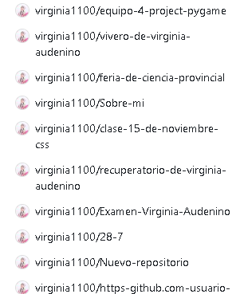

¿A que se le llama pagina web? ¿Como aprendimos a hacerlo en nuestro colegio?
Las paginas web son documentos digitales que se pueden visualizar en un navegador web. En nuestro colegio, aprendimos a crear páginas web utilizando HTML y CSS, lo que nos permitió diseñar y estructurar contenido de manera efectiva.

Repositorios creados por mi con los recursos que use para crear paginas web.
Herramientas que se usaron
Para crear nuestra página web, utilizamos las siguientes herramientas:
- HTML: para estructurar el contenido.
- CSS: para dar estilo y diseño a la página.
¿Como fue mi experiencia propia?
Crear esta página web fue una experiencia muy interesante. Aprendimos a utilizar HTML y CSS para diseñar y estructurar contenido, lo que nos permitió desarrollar nuestras habilidades en programación web.